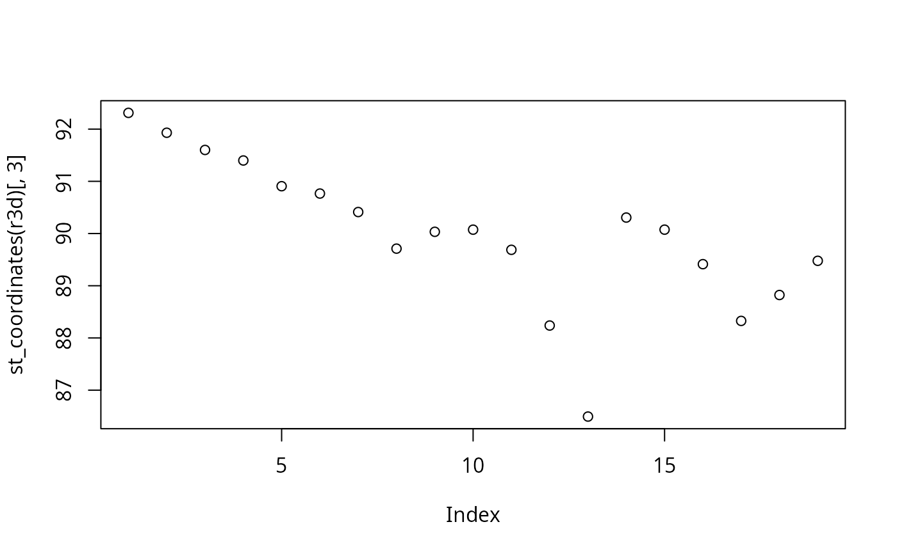
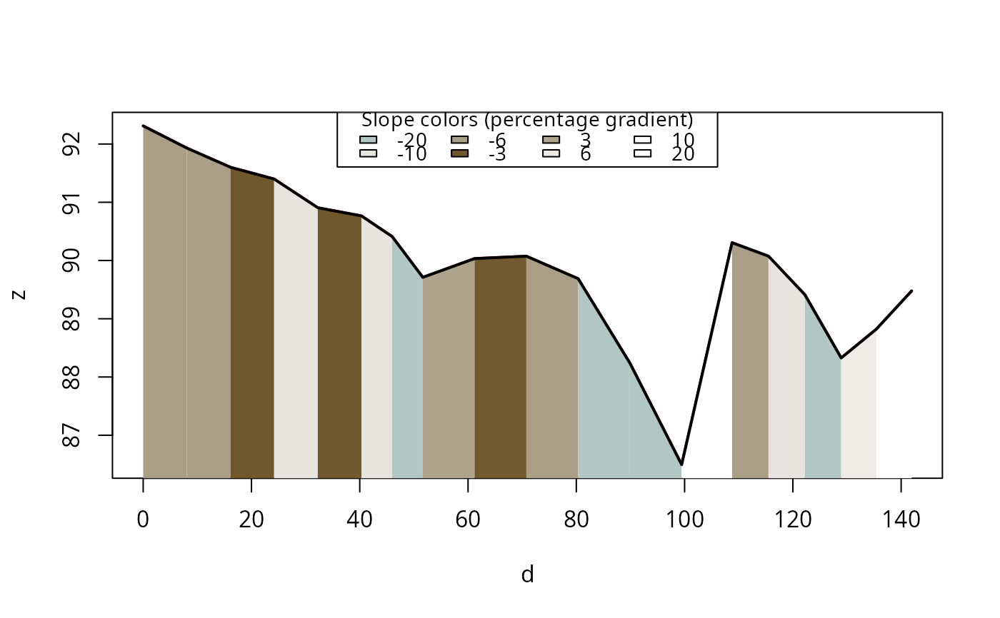

Adds elevation (Z) coordinates to linestring geometries using DEM data.
Examples
library(sf)
#> Linking to GEOS 3.12.2, GDAL 3.8.4, PROJ 9.4.0; sf_use_s2() is TRUE
#> WARNING: different compile-time and runtime versions for GEOS found:
#> Linked against: 3.12.2-CAPI-1.18.2 compiled against: 3.12.1-CAPI-1.18.1
#> It is probably a good idea to reinstall sf (and maybe lwgeom too)
routes = lisbon_road_network[204, ]
dem = dem_lisbon()
(r3d = elevation_add(routes, dem))
#> Simple feature collection with 1 feature and 7 fields
#> Geometry type: LINESTRING
#> Dimension: XYZ
#> Bounding box: xmin: -87080.48 ymin: -105629.6 xmax: -87056.99 ymax: -105506.3
#> z_range: zmin: 86.49414 zmax: 92.31126
#> Projected CRS: ETRS89 / Portugal TM06
#> # A tibble: 1 × 8
#> OBJECTID Z_Min Z_Max Z_Mean Min_Slope Max_Slope Avg_Slope
#> * <int> <dbl> <dbl> <dbl> <dbl> <dbl> <dbl>
#> 1 2997 86.5 92.3 89.9 0.334 32.0 7.49
#> # ℹ 1 more variable: geom <LINESTRING [m]>
st_z_range(routes)
#> NULL
st_z_range(r3d)
#> zmin zmax
#> 86.49414 92.31126
plot(st_coordinates(r3d)[, 3])

plot_slope(r3d)

if (FALSE) { # \dontrun{
# Get elevation data (requires internet connection, ceramic pkg, and API key):
if (requireNamespace("ceramic", quietly = TRUE)) {
r3d_get = elevation_add(cyclestreets_route)
plot_slope(r3d_get)
}
} # }